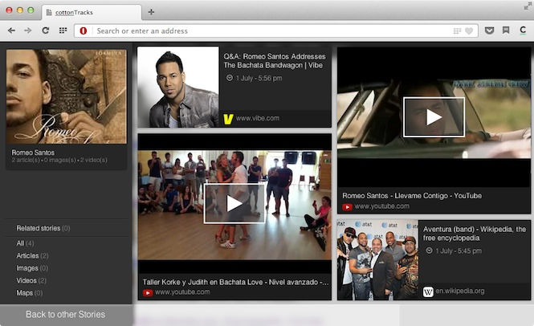

Extension developer interview: coffee with the cottonTracks team
This is the first article in what will be a series of interviews with Opera extension developers. We want to shed a light on what drives them, what their workflow is like, which tools they use, what their plans for future extension versions are, and so on. For this interview, we sat down with Hadrien Raffalli, who is co-founder of cottonTracks, the company behind the novel cottonTracks extension, and asked him some questions over a (virtual) coffee.
What is cottonTracks?
Hadrien: cottonTracks is essentially an improved, searchable and contextual version of your memory. You browse web pages every day and apply a different level of attention to various subjects. Our browser extension analyzes your behavior in real-time and create beautiful stories of your favorite content automatically.
The cottonTracks crew
How many people work on cottonTracks? Where are you based?
Hadrien: We are four French entrepreneurs who met in Paris. What started as a dorm project quickly grew into a mission. We moved to Santiago, Chile, in February 2013, after getting accepted to the revolutionary Start-Up Chile accelerator program.
How did you come up with the idea for cottonTracks?
Hadrien: We started on a completely different project (navigating the web in 3D) and realized it was only possible to map the internet if we were focusing on one single user’s perception. One of our co-founders has a crazy memory so we started to reverse engineer it as a foundation of our behavioral technology.
Where does the name cottonTracks come from?
Hadrien: The original idea is pretty poetic, it symbolizes the tracks you leave when you walk in the snow.
What is your idea-to-development workflow? What's your UX process, are there several rounds of iterations and testing before each feature is added?
Hadrien: We work using agile methodology (scrum) to define the workflow of new features and to keep track of features to improve. We implement unit tests before the feature itself. It helps to keep the code clean and creates better stability. We test all new features inside our team first and then release it to a few users. Using the feedback we get, we fix bugs and improve or remove each new addition before releasing the upgrade to a wider audience.
cottonTracks has been out for a few weeks: have you already learned something from the initial user group? Do they use cottonTracks as expected? Are there things you think you'll need to change based on the initial user feedback?
Hadrien: We are impressed by the amount of data produced. Since bookmarking is usually manual, you only do it a couple of times a day with traditional solutions, but with cottonTracks, automation makes it possible to retain all the content you wish you had bookmarked. From a usability perspective, our users are asking for a simpler navigation flow and a decent sharing experience.
cottonTracks showing cards for some music and dance queries I did recently — history on steroids, really!
Which tool has been particularly useful when developing cottonTracks?
Hadrien: Our object structure relies on John Resig's simple Class.js inheritance pattern. Secrets of the JavaScript Ninjas, from the very same author, is a excellent resource to read for better design, performance, and maintenance.
As mentioned, we use a test-driven development technique, with unit tests for every part of the code. We are using QUnit for this purpose.
How was your experience of developing Opera extensions specifically? Do you have any tips or tricks to help other extensions developers?
Hadrien: One of the key benefits about Opera is its support team. We have had an amazing relationship since we started to work with them a couple of months ago. They are strong supporters of the Open Web and actively promote innovation. You should definitely contact them.
What can we expect in the next version of cottonTracks?
Hadrien: In the coming weeks, we will greatly improve our reader feature so you can use it as a full-fledged read-later. Search and content management are the next items on the list.
In which direction do you want to evolve cottonTracks?
Hadrien: Today, cottonTracks makes your past navigation and habits more valuable. Tomorrow, we want to leverage this highly curated and personal content to help you accelerate your future navigation. We want to predict what is the next best page for you to read before you even know about it.
Thanks for the interview, Hadrien, and good luck to you and your team!
If you have suggestions who we have to interview next, let us know!
Andreas Bovens

Andreas is based in Oslo, where he works for Opera Software as Extensions Product Manager + Developer Relations.
This article is licensed under a Creative Commons Attribution 3.0 Unported license.
Comments
No new comments accepted.